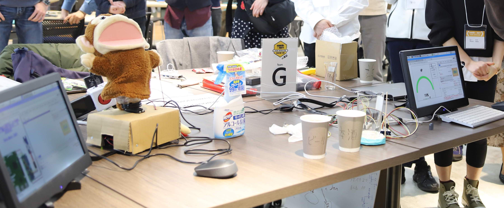

リォウ~酔い度測定システム~

担当
センサー、回路設計、web開発
使用技術
GAS、HTML、CSS、JavaScript、Raspberry_pi3、スプレッドシート
センサー、回路設計、web開発
使用技術
GAS、HTML、CSS、JavaScript、Raspberry_pi3、スプレッドシート
コンセプト
自分がどれだけ酔っているか、友達がどれだけ酔っているかどうかを判断するものを作成しました。

画面イメージ&内容

コップ側に
- 呼気センサ
- 色センサ
- 圧力センサ
を取り付け、アルコール血中濃度、飲み物の種類（ビールor日本酒）、飲んだグラス数を取得し、 酔いの状態を参考とし酔い度を表現しました。
ゲーム性を持たせるために酔い度をHPに換算し、HPが指定した値以下になった場合、出力としてぬいぐるみがアクションをします。
改善点
呼気センサーがアルコール濃度を取得するのにかなりのラグがあったので、他のセンサ(例：水分からアルコール濃度を取得できるようなセンサ)を用いるべき。
人によって酔い度が違うので、アカウントを作り、事前情報として酔いやすいかなどの情報をもらいバイアスをかける必要がある。
色センサから色を取得したが、画像認識を用いれば更に種類を分けることができそう。

感想
ラズパイが楽しかった。IoT開発を引き続きしていきたい。